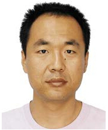

-
曹永锋
曹永锋，男，1976 年 7 月生，武汉大学贵州师范大学数学与计
算机科学学院，科研型教授，博导，硕导。1999 年毕业于原武汉测绘科技大学电子工程系，获工学学士学位。1999-2001 年武汉测绘科技
大学攻读信号与信息处理专业硕士学位，2001 年起武汉大学攻读通信与信息系统专业博士学位，博士研究方向为基于形态学流域和统计理论
（Markov Random Field 模型）的 SAR 图像解译，2004 年12 月获得博士学位。
- 中文名
- 曹永锋
- 外文名
- Yongfeng Cao
- 国 籍
- 中国
- 民 族
- 汉族
- 出生日期
- 1976 年 7 月
- 职 业
- 教师
- 毕业院校
- 武汉大学
- 主要成就
-
主持国家自然科学基金 2 项
国家重点实验室开放基金 1 项
国家重点实验室自主研究基金 1 项
校级教师资助基金 1 项
横向课题 1 项
作为主要技术骨干参与国家 863 项目，国家自然科学基金，省自然科学基金，国防预研基金等多个项目
授权发明专利 4 项

1.个人介绍
曹永锋，男，1976 年 7 月生，贵州师范大数据与计算机科学学院，科研型教授，博导，硕导。
1999 年毕业于原武汉测绘科技大学电子工程系，获工
学学士学位。1999-2001 年武汉测绘科技大学攻读信号与信息处理专业硕士学位，
2001 年起武汉大学攻读通信与信息系统专业博士学位，博士研究方向为基于形
态学流域和统计理论（Markov Random Field 模型）的 SAR 图像解译，2004 年
12 月获得博士学位。2014 年 10 月-2015 年 10 月 加拿大滑铁卢大学视觉与图像
处理实验室（VIP）访问学者。主持国家自然科学基金 2 项，国家重点实验室开
放基金 1 项，国家重点实验室自主研究基金 1 项，校级教师资助基金 1 项，横向
课题 1 项；作为主要技术骨干参与国家 863 项目，国家自然科学基金，省自然科
学基金，国防预研基金等多个项目。发表学术论文 31 篇，其中 SCI 检索 6 篇，
EI 检索 16 篇。授权发明专利 4 项。
2.研究方向
- 图像处理与检索
- 遥感图像解译
- 模式识别与机器学习
- 统计信号处理
3.科研项目
-
全极化 SAR 异质场景散射基元统计谱建模与分类，（国家自然科学基金：41161065，2012.01-2015.12）
-
高分辨率 SAR 图像复杂场景建模与基于场景的目标检测, （国家自然科学基金：40901207，2010 年 1 月-2012 年 12 月）
-
基于马尔科夫随机场的 SAR 图像分割关键技术研究, （测绘遥感信息工程国家重点实验室基金重点项目子项目 1 ，2006 年 1 月-2007 年 12 月 ）
-
基于场景指引的高分辨率 SAR 目标检测关键技术研究,（测绘遥感信息工程国家重点实验室自主研究基金，2009 年 7 月-2011 年 7 月）
-
高分辨率 SAR 图像复杂场景分类，（武汉大学自主科研基金青年项目：2009年-2011 年）
4.作为骨干参与的科研项目
-
基于 SAR 图像的目标特征提取与融合 ，（国家高技术 863 重大专项 , 2002年 7 月-2004 年 7 月） ，负责图像分割与分类研究。
-
高分辨率 SAR 数据城区信息智能检索，(国家高技术研究发展计划 863: 2007AA12Z155，2007 年-2010 年)，负责图像表达与相关反馈技术研。
-
基于幅-频多分辨率分析的 SAR 影像中海冰信息提取与分类方法研究，（国家自然科学基金批准号：40376051 , 2004 年 1 月-2006 年 12 月），排名第 2，负责SAR 图像分割研究
-
多极化 SAR 图像处理与应用，（上海卫星工程研究所,CECT38 所 , 2005 年 1月-2005 年 12 月），负责多极化图像分割研究。
5.专利申请
-
“一种相关反馈图像检索方法”，授权号：200910061710.4
-
“基于主动学习和半监督学习的多类图像分类方法”，授权号：201010184378.3
-
“一种高分辨率遥感图像复杂类别的监督分类方法”，授权号：201010107379.8
-
“由合成孔径雷达图像中检测建筑和提取数目信息的方法” 授权号：201210228057.8
6.学术论文
2014年
-
苏彩霞,曹永锋*, 基于双极化 SAR 数据的建筑栋数信息提取研, 福建师范大学学报, Vol.30(4):26-31, 2014 （中文核心）
-
任俊英,苏彩霞,曹永锋*,基于中间层特征的全级化 SAR 监督地物分类，遥感技术与应用，Vol.29(2): 330-337, 2014 （中文核心）
-
金良，曹永锋*，苏彩霞，任俊英，基于 HS 样本选择和 BvSB 反馈的多类图像分类，贵州师范大学学报，Vol.32(4):56-62, 2014
-
Yongfeng Cao, Caixia Su, Guangbin Yang, Detecting the number of buildings in a single high-resolution SAR image, European Journal of Remote Sensing, 47:513-535,
2013年
-
Yongfeng Cao, Caixia Su, Jianjuan Liang, Efficient Big-size Light Region Splitting Scheme for High-Resolution SAR Imagery, LNEE, Vol.217: 515-520,2013
-
曹永锋，谢刚，提高学生实践能力的教学课程改革探索，中国电力教育，8：170-171，2013
-
曹永锋，苏彩霞，提高数字图像处理课程中学生主动性的探索，中国电力教育，5：101-102， 2013
-
曹永锋，陈荣，孙洪，基于 BvSBHC 的主动学习多类分类算法，计算机科学，2013.8, 40(8): 309-312
-
Yongfeng Cao, Junying Ren, Jianjuan Liang, Scene classification from PolSAR image using medium-level features, APSAR2013, Tsukuba, Japan, Sep. 2013
2012年
-
Yongfeng Cao, Caixia Su, Jianjuan Liang, Building unit density detection from high resolution terrasar-x image based on mathematical morphological operators, IEEE Geoscience and Remote Sensing Symposium 2012, Munich, German, 22-27, July 2012
-
Yongfeng Cao, Caixia Su, Jianjuan Liang, High resolution SAR building detection with scene context priming, IEEE ICSP 2012, Oct.21-25, Beijing, China [3] Caixia Su, Yongfeng Cao*, Jianjuan Liang, Extracting building unit number information from high resolution SAR images with regression model, ICCIS2012, August 17-19,Chongqing, China.
-
Jianjuan Liang, Yongfeng Cao*, Caixia Su, Research on high resolution synthetic aperture radar image urban scene classification based on local semantic representation, IEEE ICSP2012, Oct.21-25, Beijing, China.
-
Guofeng Sheng, Wen Yang, Xingping Deng, Chu He, Yongfeng Cao, Hong Sun, Coastline detection in synthetic Aperture radar(SAR) images by integrating watershed transformation and controllable gradient vector flow (GVF) snake model, IEEE Joural of Ocean Engineering, 37(3),pp.375-383, 2012
2011年
-
陈荣，曹永锋，孙洪，基于主动学习和半监督学习的多类图像分类，自动化学报,2011,Vol.37(8):954-962（EI）
-
Hui Yin, Yongfeng Cao*,Hong Sun, Combining pyramid representation and AdaBoost for urban scene classification using high resolution SAR images，IET Radar,Sonar and Navigation, 2011, Vol.5(1): pp.58-64 (SCI)
-
Rong Chen, Yongfeng Cao*,Hong Sun, Active sample-selecting and manifold learning-based relevance feedback method for synthetic aperture radar image retrieval, IET Radar, Sonar and Navigation , 2011,Vol.5(2):118-127（SCI）
-
Qing Wu, Rong Chen, Hong Sun, Yongfeng Cao*, Urban building density detection using high resolution SAR imagery, Joint Urban Remote Sensing Event (JURSE2011), Munich, Germany, April. 2011 （EI）
-
Yongfeng Cao, Huang Tang, SAR Image road network extraction with scene context priming, IGARSS 2011, Vancouvar, Canada, July 2011 （EI）
-
曹永锋，吴琼，高分辨率 SAR 图像城市建筑密度信息提取，东北师大学报, 3(43):133-137, 2011
2010年
-
殷慧，曹永锋*，孙洪，基于多维金字塔表达和 AdaBoost 的高分辨率 SAR 图像城区场景分类算法，自动化学报，2010,Vol. 36 (8): 1099-1106 （EI）
曹永锋2009年
-
Rong Chen, Yongfeng Cao*,Hong Sun, “A modified method for relevance feedback in high-resolution SAR image retrieval system based on SVM”, Proceedings of 2009 Urban Remote Sensing Joint event，20-22 May 2009, Shanghai, China. （EI）
-
H.Yin, Y.F.Cao*,H.Sun, Boosted distance based on local and global dissimilarity representation, SPIE Sixth International Symposium on Multispectral Image Processing and Pattern Recognition, Vol.7496OX, pp.74960X-1~74960X-8. Oct.30- Nov.1,2009, Yichang China (EI)
-
Yongfeng Cao, Hui Yin, Fast Multilevel thresholding based on simulated water flooding, International Conference on Articicial Intelligence and Computational Intelligence, 2009, pp.502-507, Nov.2009, Shanghai,China (EI)
2008年
-
Rong Chen, Yongfeng Cao*, Hong Sun, Wen Yang, A Modified Method of Face Recognition Using SVM, International Journal of Intelligent Engineering and Systems,Vol1(1):22-29, 2008
-
Yong Yang, Hong Sun, Yongfeng Cao,Unsupervised urban area extraction from SAR imagery using GMRF, Pattern Recognition and Image Analysis, v 18, n 1, January, 2008, p 156-162 (EI)
-
Hui Yin, Yongfeng Cao*,Hong Sun, Wen Yang, Improved Mean Shift for Efficient Visual Tracking, International Journal of Intelligent Engineering and Systems, Vol2 (1):32-39, 2008
2007年
-
Yongfengcao, Hui Yin, Hong Sun, Color-Based Object Tracking Using a Hybrid Particle Filter, International Colloquium on Information Fusion 2007 (ICIF' 2007), August 2007, Xi’an China, pp306-312.
-
Hui Yin, Yongfeng Cao*, Hong Sun, Wen Yang, Visual tracking by threshold and scale-based particle filter, SPIE Fifth International Symposium on Multispectral Image Processing and Pattern Recognition, Vol.6786,678631-1 ～678631-8,September, 2007,Wuhan, China. (EI)
-
Hui Yin, Yongfeng Cao*,Hong Sun, Wen Yang, Improved Mean Shift for Efficient Visual Tracking, 1st International Workshop on Intelligent Networks and Intelligent Systems, November 2-4, 2007, Wuhan,China.
-
Rong Chen, Yongfeng Cao*,Hong Sun, Wen Yang, A Modified Method of Face Recognition Using SVM, 1st International Workshop on Intelligent Networks and Intelligent Systems, November 2-4, 2007, Wuhan,China
-
Huiyan Zhao, Xiang Duan, Yongfeng Cao, Color-based object tracking using fast survival-of-the-fittest method, Fourth International Conference on Fuzzy Systems and Knowledge Discovery, FSKD 2007, pp.311-316, Haikou China. (EI)
2006年
-
Yongfeng Cao, Hong Sun, and Xin Xu, "Synthetic Aperture Radar Image Segmentation Using Edge Entropy Constrained Stochastic Relaxation", ICIC’2006, Lecture Notes in Control and Information Science （LNCIS） 345, Page(s): 528-537 (SCI)
-
Wen Yang, Hao Wang, Yongfeng Cao, and Haijian Zhang, "Classification of Polarimetric SAR Data Based on Multidimensional Watershed Clustering", Proceedings of 2006 Advanced Data Mining and Applications, vol. 4093, pp. 157-164,2006.8,xi'an, China. (SCI)
-
Yong Yang, Hong Sun, YongFeng Cao, "Unsupervised urban area extraction from SAR imagery using GMRF", Pattern Recognition and Image Analysis ：Advances in Mathematical Theory and Applications. vol.16, no.1, pp：116-119,2006. (EI)
2005年
-
Yongfeng Cao, Hong Sun, Xin Xu, “An Unsupervised Segmentation Method Based on MPM for SAR Images”, IEEE Geoscience and Remote Sensing Letters, Vol.2, No.1, pp. 55-58, 2005. (SCI)
-
Yongfeng Cao, Chuanzhao Han, Hong Sun and Wen Yang, “Extended Multi-Level Logistic Model and SAR Image Segmentation” IGARSS2005 (EI)
-
Huiyan Zhao, Yongfeng Cao, SAR Image segmentation using MPM and constrained stochastic relaxation, The Fourth International Symposium on Multispectral Image Processing and Pattern Recognitio (MIPPR2005), Proceedings of SPIE, Vol.6043 pp. 60432V-1－60432V-6 (EI)
-
Xiangyu Yu, Hong Sun and Yongfeng Cao, SAR image registration combining watershed segmentation and mutual information, The Fourth International Symposium on Multispectral Image Processing and Pattern Recognitio (MIPPR2005), October 31st-November 2nd, 2005. Proceedings of SPIE, Vol.6043 pp. 60432U-1－60432U-8 (EI)
-
赵会彦,曹永锋*,“区域轮廓的快速等级提取”,光电工程, 43-46,2005 第 12 期 (EI)
-
王皓,曹永锋*,孙洪，“基于流域变换的聚类分析”信号处理, 375－378，2005, 第21 卷，第 4A 期 (CCSP-2005 优秀论文)。
2004年
-
曹永锋，孙洪，杨文，徐新 “基于 MPM 准则的 SAR 图像无监督分割”，武汉大学学报（信息科学版），第 29卷，第 9期，812-815，2004年 9月。 (EI)
-
Yong Yang, Hong Sun, Yong-Feng Cao, "Unsupervised urban area extraction from SAR imagery using GMRF", 7th international conference on pattern recognition and image analysis: new information technologies. Conference Proceedings, Vol 3, p970-972, 18-23 October, 2004 （EI）
-
Yong Yang, Yong-Feng Cao*, Hong Sun, "Segmentation of SAR Imagery Using the Gaussian Marcov Random Field Model", ProIceedings of IEEE 7th international conference on Signal Processing (ICSP04), Vol 3, pp.1977-1980, September, 2004 (EI)